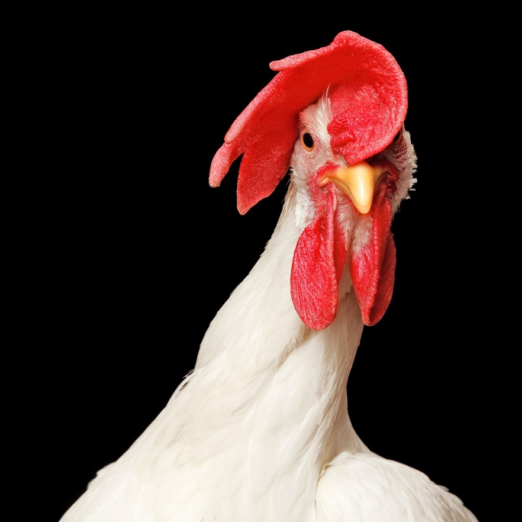

Chicken

Link to Google
About me
The chicken(Gallus gallus domesticus) is a type of domesticated fowl, a subspecies of the red junglefowl (Gallus gallus). Chickens are one of the most common and widespread domestic animals, with a total population of 23.7 billion as of 2018.[1] up from more than 19 billion in 2011.[2] There are more chickens in the world than any other bird or domesticated fowl.[2]Humans keep chickens primarily as a source of food (consuming both their meat and eggs) and, less commonly, as pets. Originally raised for cockfighting or for special ceremonies, chickens were not kept for food until the Hellenistic period (4th–2nd centuries BC).[3][4]
Genetic studies have pointed to multiple maternal origins in South Asia, Southeast Asia, and East Asia,[5] but with the clade found in the Americas, Europe, the Middle East and Africa originating in the Indian subcontinent. From ancient India, the domesticated chicken spread to Lydia in western Asia Minor, and to Greece by the 5th century BC.[6] Fowl had been known in Egypt since the mid-15th century BC, with the "bird that gives birth every day" having come to Egypt from the land between Syria and Shinar, Babylonia, according to the annals of Thutmose III.[7][8][9]
Terminology
In the UK and Ireland, adult male chickens over the age of one year are primarily known as cocks, whereas in the United States, Canada, Australia and New Zealand, they are more commonly called roosters.
General biology and habitat
Chickens are omnivores.[15] In the wild, they often scratch at the soil to search for seeds, insects and even animals as large as lizards, small snakes,[16] or young mice.[17]
Types of chicks:
- First
- A
- B
- Second
- C

- B
- A
- B
- C
- B